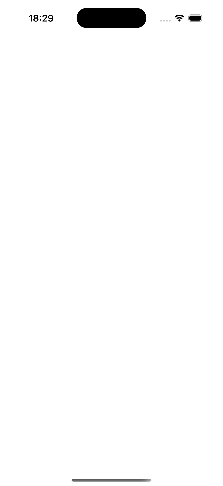
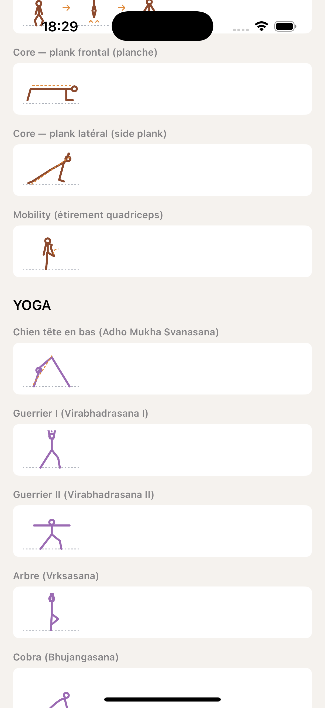
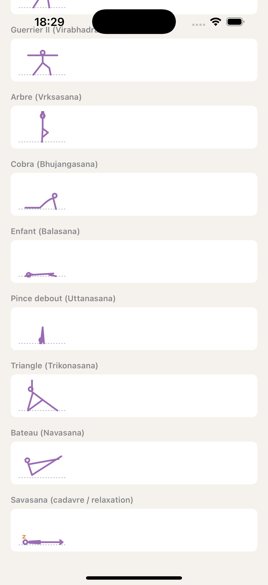

Story 3.19 — 20 illustrations (10 strength + 10 yoga)
CoachingSage · Jalon 1 + 2 + 2c yoga · 2026-05-23 · Grille didactique validée Sophie
Principe produit Sophie 2026-05-23 : on n'illustre QUE les gestes où l'image est nécessaire à la compréhension. Strength (positions techniques) + Yoga (poses inconnues du débutant) = OUI. Cardio universel (running, swim, cycling continu) = NON, fallback SF Symbol sport + glossaire pour les mots opaques.
🎨 Palette tokens (réutilisée de Color+Coaching.swift)
Silhouette strength (brun rouille)
Silhouette yoga (violet)
Équipement / barre (bleu marine)
Charges / haltères (or)
Annotations / chevrons (orange)
Sol pointillé (gris 50%)
Strength — 10 illustrations
① Squat à Plyo

② Core + Mobility

③ Yoga 1-5
Yoga — 10 poses
Poses fondamentales 6-10

Patterns SANS dessin (décision produit) : Running endurance / interval / drills · Swim endurance / drill rattrapé · Cycle endurance / interval. Ces 7 patterns tombent automatiquement sur le SF Symbol sport (
ExercisePatternGenericFallback).
Glossaire enrichi pour compenser :
drill (FR + EN) — définition générique avec exemple du drill rattrapé natation : « un bras tendu devant attend que l'autre bras fasse le cycle complet et vienne le toucher, puis ce dernier redémarre »plank / planche / side plank — Jalon 1